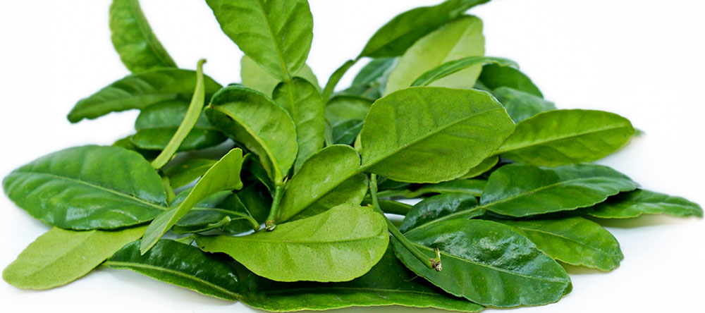
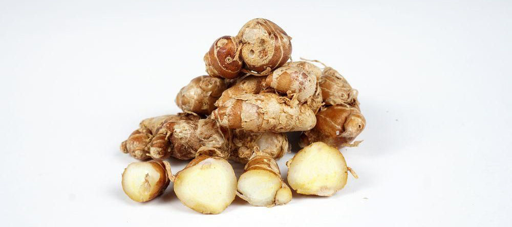
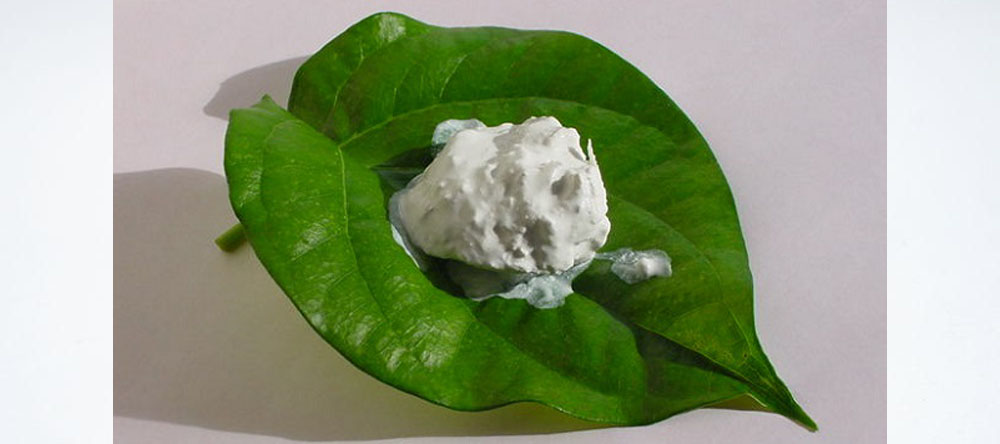
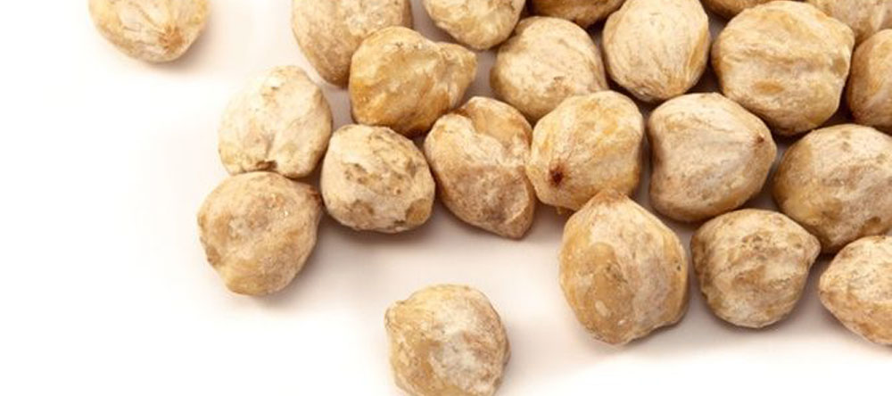
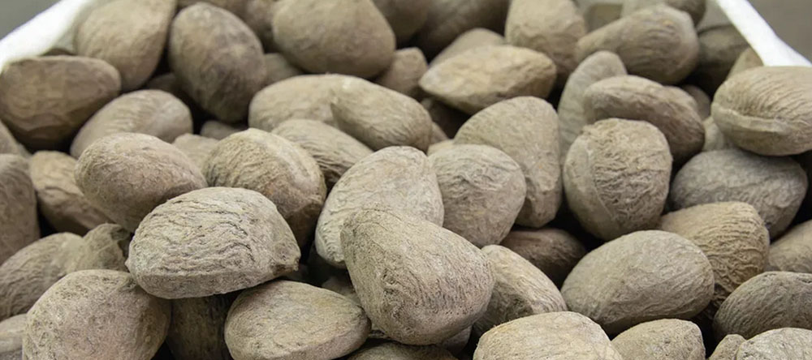
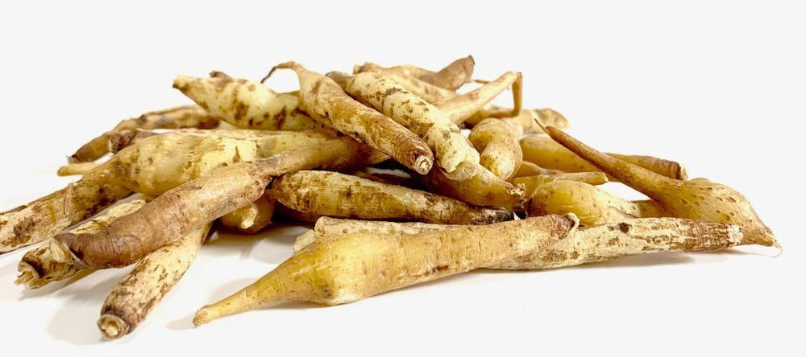

Indonesian Herbs and Spices
Indonesian cuisine is rich in spice and herbs. From the simplest dish like Sambal to the complicated, slow-cooked Rendang, herbs are indeed important ingredients to add flavor and aroma to the foods.
Although it seems that Indonesian cooking is very difficult, it’s not really true. In fact it’s really easy, if you know the types of herbs you are going to use in the cooking, and how to use them.
Below are some of the essential herbs (Bahasa: bumbu dapur) used in Indonesian dishes, that you might be not familiar with:
Tamarind (Asam)
Asam or tamarind is a main herb for Sayur Asam. It is also commonly used to get rid of fishy aroma in seafood. The right way to use tamarind in Indonesian foods is by soaking tamarind in warm water, and straining the water from its residue.
Kaffir Lime Leaves (Daun Jeruk Purut)
The leaves have a subtle fragrance which gives a distinctive taste to many lemon grass based dishes, such as Soto, Rawon, Rendang, and certain types of coconut milk-based dishes. Usually, kaffir lime leaves are used along with lemongrass, bay leaves, and galangal.
Bay Leaves (Daun Salam)
Like kaffir lime leaves, bay leaf also gives a subtle flavor to dishes. This leaf is used in many Indonesian dishes. You can find this leaf in traditional markets as well as supermarkets in Indonesia. Bay leaf can be stored for months in a dry and clean place with good air circulation without getting lose some of the flavor and aroma.
Aromatic Ginger (Kencur)
Kencur has smaller size and its skin is slightly darker than ginger. It has a very distinctive aroma compared to other herbs. Usually kencur is used in Sambel Pecel, Sayur Lodeh, Karedok, and Rempeyek (rice flour crackers).
Slaked Lime (Kapur Sirih)
Slaked lime is a paste obtained by grinding calcium oxide (lime) mixed (or slaked) with water. To use slaked lime in Indonesian dishes, you need to mix one part of slaked lime with two parts of water. Let it settle for one hour, and use only the clear water part of the mixture for cooking purpose. Usually, slaked lime water is used in order to make food ingredients crispier.
Candlenuts (Kemiri)
The waxy white kernel cannot be used as a single herb, but must be ground together with other spices like garlic, shallots, chilies, and shrimp paste (terasi). Candlenuts are used as thickening agent for sauces of many Indonesian dishes.
Galangal (Lengkuas)
Galangal has a similar texture to ginger, but has different aroma and color. This is also one of the most commonly used herbs in Indonesian dishes. To obtain subtle aroma from galangal, people usually crush or slice galangal to be added to dishes.
Kluwak
Kluwak or keluwek is the fruit of pangium edule tree which is native to the mangrove swamps of Southeast Asia. Kluwek gives the peculiar black color in Rawon (Javanese beef stew). The Toraja dish pammarrasan (black spice with fish, meat, or vegetable) also uses kluwak powder as the part of its spice.
Finger Root (Temu Kunci)
Temu kunci (finger root, lesser galangal, or Chinese ginger) is a medicinal and culinary herb from China and Southeast Asia. In Indonesia, this root is used in Sayur Bening (spinach soup), Urap (vegetable and coconut dish), and certain types of fish soups.